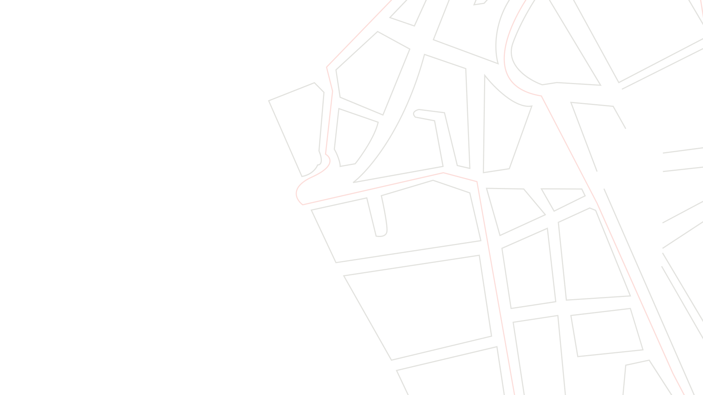
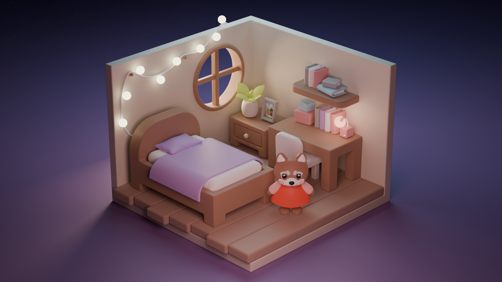
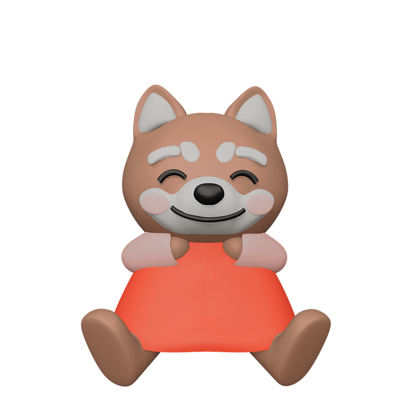
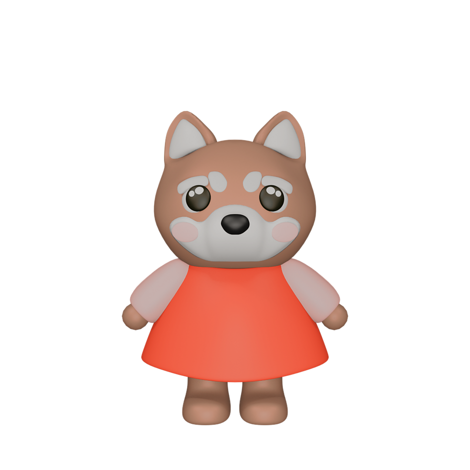
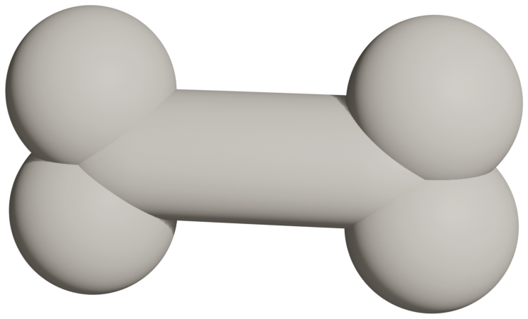
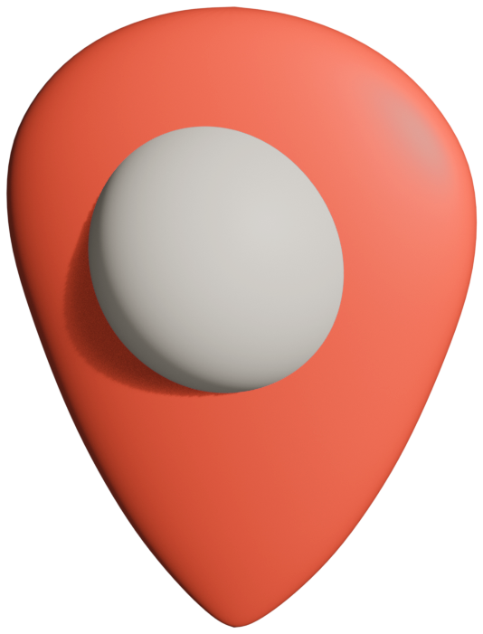
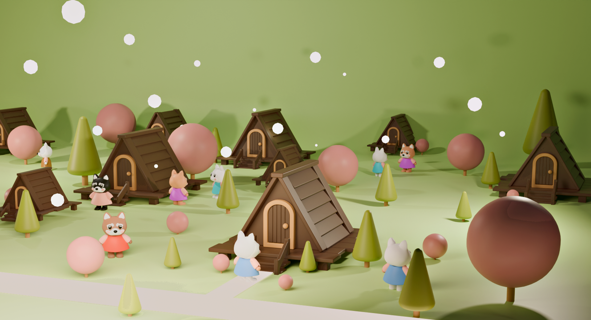
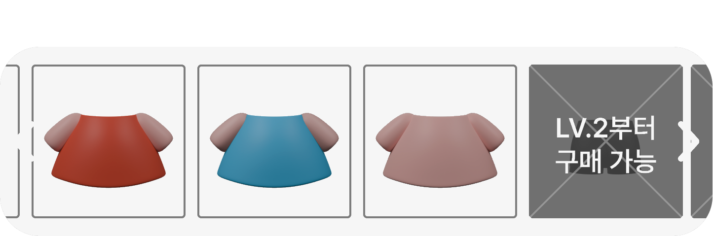

01HOME
한눈에 확인하는 산책 정보
산책 기록과 주요 기능을 한 화면에 정리하고, 핵심 서비스에 빠르게 접근할 수 있도록 구성했습니다.

01 PROJECT OVERVIEW문제를 발견하고 서비스의 방향을 설정하다
위펫월드 · WITH PET WORLD
산책의 의무감과 산책 환경 정보 부족, 펫티켓 이슈에 주목합니다. 위치 기반 정보와 게이미피케이션을 결합해 즐겁고 편리한 산책 경험과 바람직한 산책문화를 제안합니다.
AI 맞춤 경로와 게이미피케이션으로 산책의 즐거움 강화
위치 기반 산책 환경 및 반려동물 동반 시설 정보 제공
위치 기반 펫티켓 안내와 참여형 퀴즈로 인식 개선 유도

MY PETGAMIFICATION

02 BRAND IDENTITY서비스의 콘셉트를 시각적 경험으로 구체화하다

반려동물(Pet)과 함께(With)하는 산책 경험을 하나의 세상(World)으로 연결한다는 의미를 담았습니다.
#F35F4C#FFC7C3#FFF8F7Blender를 활용해 반려동물 캐릭터와 아이소메트릭 공간을 제작하고, 서비스의 게이미피케이션 경험에 적용했습니다.






03 VISUAL EXPERIENCE브랜드 아이덴티티를 실제 서비스 화면으로 확장하다
01HOME
산책 기록과 주요 기능을 한 화면에 정리하고, 핵심 서비스에 빠르게 접근할 수 있도록 구성했습니다.

02WALKING
쓰레기통 위치와 펫티켓 유의구역 알림 등 산책 중 필요한 정보를 지도에서 제공합니다.
03PET & MY WORLD
산책 활동으로 얻은 리워드를 캐릭터와 공간 꾸미기에 활용하도록 구성해 반복되는 산책에 재미를 더했습니다.

04PET GUIDE
필요한 상황에 따라 나뉜 펫티켓 지식과 퀴즈로 바람직한 산책 문화를 쉽게 익히도록 했습니다.
04 VALIDATION & LEARNED사용자의 반응으로 서비스의 가능성을 확인하다
* 20명 중 5점 척도에서 4점 이상 평가한 인원
쓰레기통 위치 확인의 편리함
산책할 때 배변봉투 버리기가 쉬워질 것 같아요.
반려동물 동반 장소 탐색의 유용성
애견동반 장소를 찾기 위해 자주 사용할 것 같아요.
캐릭터 꾸미기를 통한 참여 동기
내 반려견처럼 귀여운 펫을 꾸미기 위해 앱을 많이 이용할 거예요.
지도 UI의 캐릭터화
MAP UI가 좀 더 캐릭터화됐으면 좋겠어요.
퀴즈 콘텐츠 다양화
하루에 풀 수 있는 퀴즈가 여러 개면 좋겠어요.